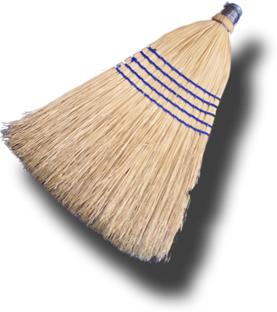

View and Use the Tidy Messages Table
You can use Balthisar Tidy’s “Tidy Messages” table
to review the problems that Tidy found with your document, and
use that information to correct the HTML source, if wanted, by
following these simple steps.
-
Make sure that you have opened the document
that you would like to Tidy.
-
Observe the details in the Tidy Messages
table, if any.
-
Select the item in the table for which you would like to see more information.
Balthisar Tidy will highlight the error for you in the
HTML Source panel.